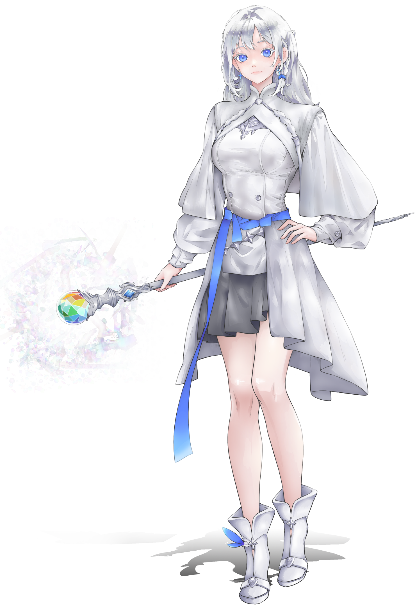

Ciarra Crownsworth
the Silver-Haired Witch
Bastion
Everlight, the Dawn Bringers
Race
Valorian
Soulforge
Aetheria
Resonance
Elemental Manipulation
Youngest daughter of the 32nd Everlight's Paragon, Ciarra Crownsworth grew up in a strict environent with great expectations from her peers. Thanks to the Paragon's ancestry, she naturally possesses the symbol of her race & Bastion---the ability to bend light to her will. Throughout her journey though, she has proven that she is more than that. Aside from light, she can also control every other natural element in the world, granting her the title of the Elemental Master. In the battlefield, she has also earned the nickname of the Silver-Haired Witch, but in contrast to the ominous name, she is one of the Four Great Beauties in Valhalla.
